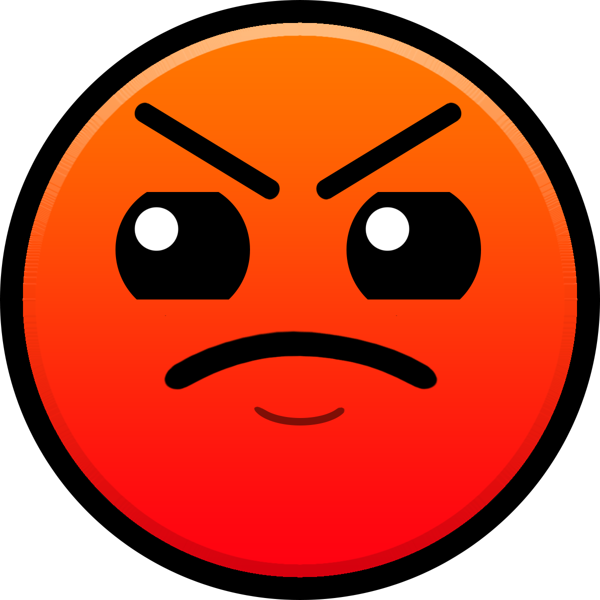

The Easy difficulty is obviously the easiest difficulty. The main levels that are rated Easy are Stereo Madness and Back on Track. Two of the most popular creator levels that are rated Easy are Retray by DimaVIKuLov26 and Sonar by Jerkrat.
The Normal difficulty is the second easiest difficulty. The main levels that have the Normal rate of difficulty are Polergeist and Dry Out. Two of the most popular creator levels that are rated Normal are Level Easy created by someone by the name of Cody and End of Line by PMK.

The Hard difficulty is a step up from the other 2 and this is when it starts to get mild in difficulty. The main levels that are rated Hard are Base after Base and Can’t Let Go. It actually took a while to beat Can’t Let Go. Two of the most popular creator levels rated Hard are OuterSpace by Nicki1202 and Acid Factory by Irenehugoxfoxy7

The Harder difficulty is when it takes a while to beat some of the levels. There are more than 2 Harder rated levels and they are Jumper, Time Machine, Cycles, Blast Processing, and Geometrical Dominator. It took me a while to beat some of these. Two of the most popular creator levels that are rated Harder are
The Insane Difficulty can almost be as hard as some of the Easy Demons. That's how hard some can be. The Main levels that are rated Insane are Xstep, Clutterfunk, Theory of Everything, Electroman Adventures, Electrodynamix, Hexagon Force, Fingerdash, and Dash. Two of the most popular creator levels that are rated Insane are
Easy Demons are the first Demon rated levels and gameplay starts to get insanely hard. However, some of the levels are decently mild. Three of the main levels that are Easy Demon are Clubstep, Theory of Everything 2, and Deadlocked. This is also the highest difficulty main levels get to. Two of the most popular creator levels that are rated Easy Demon are The Nightmare by Jax and Platinum Adventure by Jerry4.
Medium Demons start to get to the part where none of the levels are easy and they're all hard. The gameplay gets tighter, there’s more fakes, there's more orbs, and the speed ramps up. Some of these levels could actually be hard demons but for some reason there are not. Deadlocked was argued to be a Medium Demon but was then confirmed it was an Easy Demon. Two of the most popular creator levels that are rated Medium Demon are Theory of Skrillix by do
My 5th favorite Extreme Demon is BLOODLUST created by Knobbelboy. It's basically a remake but more detailed of BLOODBATH. Its length is extra long and it's one of my favorite Extreme Demons because of the gameplay and detail. The BLOODLUST monster is probably one of my favorite details in GD. The gameplay looks very hard and surprisingly looks really fun. I love BLOODBATH so seeing a level with better detail but also having its own personal touch makes it one of my favorites.
My 4th favorite Extreme Demon is YATAGARASU created by TrusTa. This level is one of my favorite Extreme Demons because of its gameplay. It goes from invisible spikes to orb tricks. From extremely hard wave gameplay, to fast robot gameplay this level is super hard. It is also an extra long level so there's tons of good gameplay. The vibe is super cool and this is why it's my 4th favorite Extreme Demon.
My 3rd favorite Extreme Demon is CATACLYSM. Even though this is a very Easy Extreme and I myself have 8% on it, it's a very cool level. CATACLYSM has a very hard wave with very tight inputs to really hard ball gameplay with lots of memory. Even though it is a pretty short level, the hard parts of the level bring it up to one of my favorites.
My 2nd favorite Extreme Demon is BLOODBATH. This level is so iconic to Geometry Dash and has amazing gameplay and detail. Even though the detail isn't as good as some other levels the vibe, music, and gameplay give people the chills. All the gameplay is amazing from ship to wave and from ball to ufo. The speed, portals, and everything is just amazing about this level. The inputs you have to get through make it devastatingly hard because it's almost frame perfect. When you see what I mean about this level you'll know how great everything is.
My Favorite Extreme Demon is SLAUGHTERHOUSE! This level is in the top 10 hardest Extreme Demons and even though it's a super short extreme, the gameplay of this level is extraordinary extreme. The start of the level is the easiest with some really hard jumps that are basically frame perfect with some fakes. Then the level gets to x4 speed which is the fastest speed and gives some of the hardest gameplay ever. The wave and ship are devastatingly hard. There's spam, straight fly, frame perfect spaces, and much more. Let’s just say you get a lot more than you think you will from the amount of time it takes to beat this Extreme Demon. The song syncs perfectly and it even gives you the chills. This is why SLAUGHTERHOUSE is my favorite extreme demon.